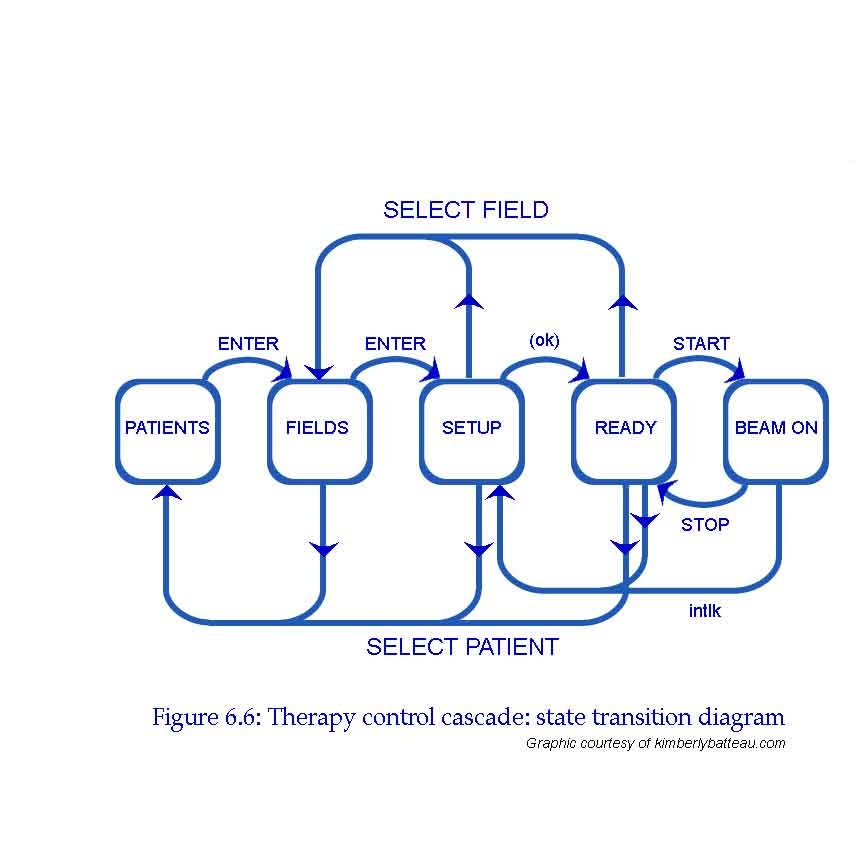

Excerpts from Chapter 6 in The Way of Z. Sections explaining the motivation are omitted here.
Links to more Z examples.
This page looks best when this  and this X are
about the same size:
and this X are
about the same size:  X. See these viewing tips.
X. See these viewing tips.
Here we show three ways to represent a finite state machine model: a diagram, a table, and Z.
We can draw a state transition diagram.
States are indicated by bubbles; transitions between states by arrows. The arrows are labelled with the events that cause state transitions. Thus, in the PATIENTS state pressing the ENTER key causes a transition to the FIELDS state, but in the FIELDS state pressing ENTER gets you to SETUP.
We can trace all possible treatment sequences by following the arrows around the diagram.
The state transition diagram is a picture of our state machine model. There are other ways to represent the same model. Here is the state transition table.
| SELECT PATIENT | SELECT FIELD | ENTER |
ok |
START |
STOP | intlk | |
| PATIENTS | --- | --- | FIELDS | --- | --- | --- | --- |
| FIELDS | PATIENTS | --- | SETUP | --- | --- | --- | --- |
| SETUP | PATIENTS | FIELDS | --- | READY | --- | --- | --- |
| READY | PATIENTS | FIELDS | --- | --- | BEAM ON | --- | SETUP |
| BEAM ON | --- | --- | --- | --- | --- | READY | SETUP |
Entries in the table indicate the next state that is reached when the event indicated by the column heading occurs during the state indicated by the row heading.
This table is a bit more explicit than the state transition diagram because it makes it clear when events are ignored. For example, pressing the SELECT PATIENT key in the BEAM ON mode has no effect (causes no state change); this is indicated by the hyphen --- in the table. Including all of these in the diagram would make it too cluttered. As notations grow more formal, they become more explicit and rely less on unwritten assumptions.
Finally, we express the state machine model in Z.
Don't worry about the details of the notation for now. You should be
able to see that the function transitions models the state
transition table. For example, the expression
(patients,enter)  fields corresponds to the single
transition in the first row of the
table: when the patients screen is displayed, pressing enter
displays the fields screen. Likewise,
(fields, select_patient)
fields corresponds to the single
transition in the first row of the
table: when the patients screen is displayed, pressing enter
displays the fields screen. Likewise,
(fields, select_patient)  patients,(fields, enter)
patients,(fields, enter)  setup
represents the two transitions in the second row of the table.
setup
represents the two transitions in the second row of the table.
| STATE ::= patients | fields | setup | ready | beam_on |
| EVENT ::= select_patient | select_field | enter | start | stop | ok | intlk |
| FSM == (STATE |
| no_change, transitions, control: FSM | ||
| control = no_change | ||
| no_change = { s: STATE; e: EVENT | ||
| transitions = { (patients, enter) | ||